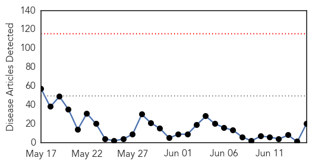
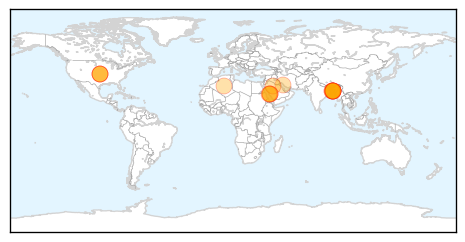
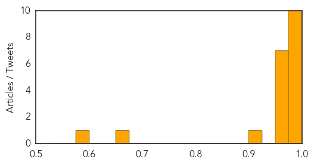
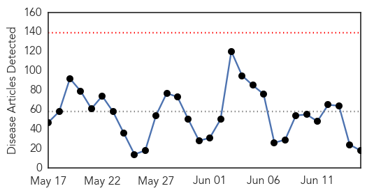
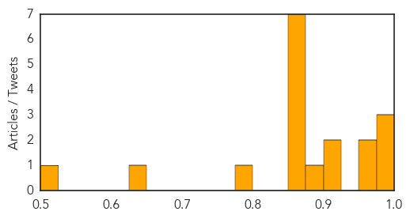

MERS
30-Day Web Trend
0 alerts, 0 warnings

30-Day Twitter Trend
1 alerts, 0 warnings

Article Locations
Article Confidences
Top Articles:
- 1.000
- Middle East respiratory syndrome coronavirus (MERS-CoV)
- 0.997
- First case of MERS in Bangladesh
- 0.996
- The Voice of Russia: News, Breaking news, Politics, Economics, Business, Russia, International current events, Expert opinion, podcasts, Video
- 0.993
- Bangladesh Reports First Case of Deadly MERS Virus
- 0.991
- Killer virus demands open accounting
- 0.982
- Bangladesh reports first case of MERS virus
- 0.982
- Bangladesh reports first case of MERS virus
- 0.978
- Bangladesh reports first case of MERS virus
- 0.978
- Farsnews
- 0.976
- Bangladesh reports first case of MERS infection
- 0.972
- Bangladesh reports first case of MERS virus
- 0.972
- Bangladesh reports first case of Mers infection
- 0.972
- Bangladesh Reports First Case Of MERS Infection
- 0.968
- First MERS case confirmed in Bangladesh
- 0.962
- First MERS case confirmed in Bangladesh
- 0.962
- First MERS case confirmed in Bangladesh
- 0.958
- Bangladesh reports first case of Mers virus - Emirates 24
- 0.910
- MERS detected first time in Bangladesh
- 0.659
- First case of MERS virus in BD
- 0.580
- Bangladesh Reports First Case of MERS Infection
Top Tweets:
-
No tweets found for Jun 15, 2014
Unknown
30-Day Web Trend
0 alerts, 0 warnings

30-Day Twitter Trend
0 alerts, 0 warnings

Article Locations

Article Confidences
Top Articles:
- 0.999
- Saudi MERS Response Hobbled By Institutional Failings
- 0.990
- Australian Defence Force Academy cadet diagnosed with meningococcal
- 0.989
- Meningococcal disease case at Australian Defence Force Academy
- 0.958
- New England braces for surge of ticks, threat of Lyme disease
- 0.953
- Diseases, Viruses & Parasites
- 0.917
- Chicago Tribune
- 0.901
- New vaccine available for deadly meningococcal
- 0.888
- Meningococcal threat brings new push for vaccinations
- 0.871
- AES cases put question mark over immunization claims
- 0.866
- Colombia's Zuluaga concedes defeat to Santos in presidential race
- 0.866
- Gunfire as Israeli troops surround house in flashpoint West Bank city
- 0.866
- Rosneft reports fatal fire at Achinsk oil refinery in Siberia
- 0.866
- Pakistan army launches "comprehensive operation" in North Waziristan
- 0.866
- Netanyahu says Hamas behind abduction of 3 Israeli teens -radio
- 0.854
- 3 health workers suspended in Tripura
- 0.781
- Sexually Transmitted Disease: HPV Is the Most Common
- 0.635
- Beef Recalled in Missouri
- 0.511
- Sherry Boas: Swimming in freshwater lakes is fun
Top Tweets:
-
No tweets found for Jun 15, 2014